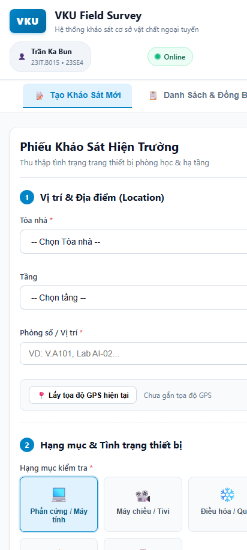
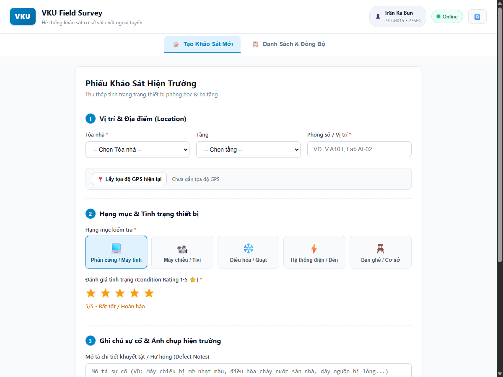

| # | Required Feature | Status | Implementation Details & Acceptance Level |
|---|---|---|---|
| 1 | PWA Standalone Installation | ✅ Complete |
• Cấu hình manifest.json hoàn chỉnh: display: standalone, theme color #0284c7, background #ffffff, đầy đủ icons 192x192 và 512x512.• Tích hợp Workbox Service Worker caching toàn bộ App Shell (HTML, CSS, JS, Fonts, Icons) theo chiến lược Cache-First giúp khởi động tức thì (< 1s) khi không có mạng. |
| 2 | Offline Form & Draft Persistence | ✅ Complete |
• Form khảo sát đa bước gồm: Tòa nhà, Tầng, Phòng số, 5 Hạng mục thiết bị, Đánh giá 1-5 sao trực quan (⭐⭐⭐⭐⭐), Ghi chú hư hỏng, Chụp ảnh Camera và Tọa độ GPS. • Real-time Draft Persistence: Tự động lưu bản nháp vào IndexedDB (bảng drafts) theo thời gian thực (real-time debounce) chống mất dữ liệu khi reload trang.
|
| 3 | Offline Queue & Background Sync | ✅ Complete |
• Khảo sát tạo khi Offline được gắn thẻ UUID, timestamp và lưu trạng thái PENDING_SYNC vào hàng đợi syncQueue.• Tự động lắng nghe sự kiện mạng ( window.ononline và @capacitor/network) để tuần tự đẩy dữ liệu lên server ngay khi kết nối được phục hồi.
|
| 4 | Capacitor Native APK Compilation | ✅ Complete |
• Tích hợp @capacitor/camera để chụp ảnh phần cứng và @capacitor/geolocation để lấy tọa độ hiện trường.• Thiết lập cấu hình đóng gói Native Android APK thông qua Android Studio và Capacitor CLI. |
Hệ thống được thiết kế theo mô hình Offline-First Architecture, tách biệt rõ ràng giữa tầng hiển thị giao diện (Vue 3 Components), tầng truy xuất dữ liệu cục bộ (IndexedDB Repositories), và tầng đồng bộ dữ liệu nền (Background Sync & Network Services).
+-------------------------------------------------------------------------------+
| GIAO DIỆN KHẢO SÁT HIỆN TRƯỜNG (UI) |
| [Form nhập liệu: Tòa nhà, Phòng, Hạng mục, 1-5⭐, Ảnh, GPS] |
+---------------------------------------+---------------------------------------+
|
(Nhập liệu real-time)| (Bấm Lưu Phiếu Khảo Sát)
v v
+-------------------------------------------------------------------------------+
| CƠ SỞ DỮ LIỆU INDEXEDDB CỤC BỘ |
| +-------------------+ +--------------------+ +------------------------+ |
| | drafts Store | | surveys Store | | syncQueue Store | |
| | (Lưu nháp tức thì)| | (Lưu phiếu cục bộ) | | (Hàng đợi chờ Sync) | |
| +-------------------+ +--------------------+ +-----------+------------+ |
+--------------------------------------------------------------|----------------+
|
(Thiết bị có mạng / Reconnect)
v
+---------------------------------------+
| BACKGROUND SYNC SERVICE |
| (Tuần tự gửi POST /api/surveys) |
+-------------------+-------------------+
|
v
+---------------------------------------+
| BACKEND API SERVER |
| (HTTP 200 OK -> SYNCED) |
+---------------------------------------+
src/types/survey.ts: Định nghĩa TypeScript Interfaces (Survey, SurveyDraft, Category, SyncStatus).src/db/: Quản lý IndexedDB với các module database.ts, surveyRepository.ts (CRUD & Draft), syncRepository.ts (Hàng đợi FIFO).src/services/: Chứa networkService.ts (giám sát Online/Offline), syncService.ts (đồng bộ dữ liệu tự động), cameraService.ts (chụp ảnh base64), locationService.ts (định vị GPS).src/components/: SurveyForm.vue (Form kiểm tra đa bước, đánh giá 5 sao), SurveyList.vue (Quản lý lịch sử và thẻ trạng thái).

Vấn đề: Các API camera thông thường trên thiết bị trả về blob: hoặc đường dẫn tạm thời. Khi ứng dụng PWA chạy ngoại tuyến, nếu người dùng vô tình tải lại trang hoặc đóng trình duyệt, các Blob URL này sẽ bị hệ điều hành thu hồi (revoke), dẫn đến mất hình ảnh trước khi phiếu khảo sát được gửi đi.
Giải pháp: Xây dựng cameraService.ts cấu hình chế độ trích xuất ảnh CameraResultType.DataUrl (chuỗi mã hóa Base64). Toàn bộ dữ liệu ảnh được lưu trực tiếp vào cơ sở dữ liệu IndexedDB của trình duyệt. Nhờ đó, hình ảnh được bảo toàn nguyên vẹn ngay cả khi thiết bị khởi động lại hoặc hoạt động ngoại tuyến nhiều ngày.
Vấn đề: Khi thiết bị di chuyển từ vùng mất sóng vào vùng có mạng, sự kiện kết nối lại (window.ononline, networkStatusChange) có thể bị kích hoạt nhiều lần liên tiếp, gây nguy cơ gửi dữ liệu trùng lặp (duplicate submissions) hoặc tắc nghẽn đường truyền nếu gửi đồng loạt.
Giải pháp: Triển khai syncService.ts với cờ kiểm soát đơn tuyến isSyncing và xử lý theo mô hình hàng đợi tuần tự (FIFO Queue). Mỗi phần tử trong syncQueue được gửi đi theo thứ tự thời gian; sau khi nhận phản hồi xác nhận từ máy chủ (HTTP 200), bản ghi trong bảng surveys được chuyển sang SYNCED và xóa khỏi hàng đợi. Nếu kết nối bị ngắt giữa chừng, quá trình đồng bộ sẽ tự dừng lại an toàn và tiếp tục ở lần kết nối mạng kế tiếp.